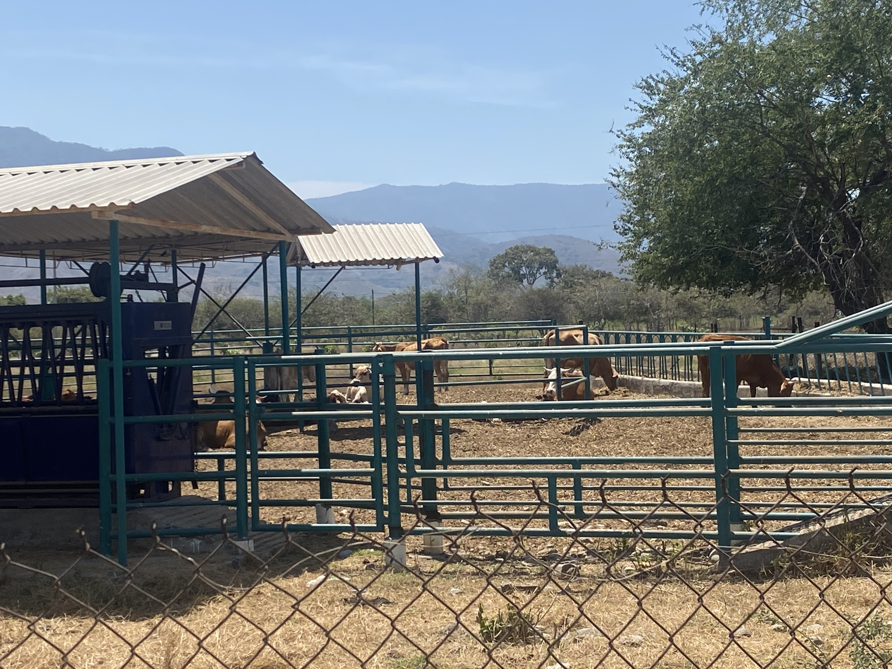

Las Vacas en la Producción Agropecuaria
En el CBTA 140, la ganadería es una de las áreas fundamentales para la formación técnica de los estudiantes. Las vacas representan una parte clave en la producción de leche, carne y abono orgánico.
El manejo adecuado del ganado bovino incluye la alimentación balanceada, cuidado veterinario y bienestar animal. Los alumnos aprenden a trabajar con responsabilidad y respeto hacia los animales.
Importancia Económica
La producción ganadera no solo contribuye a la economía rural, sino que también impulsa el desarrollo sustentable en las comunidades agrícolas.